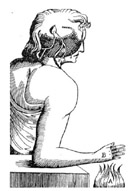

Intentional Action Princeton University
The Concept of
Joshua Knobe

These experiments have already been presented in various journal articles. They are being reproduced online for demonstration purposes only. No data is being collected, and your responses will not be recorded in any way.